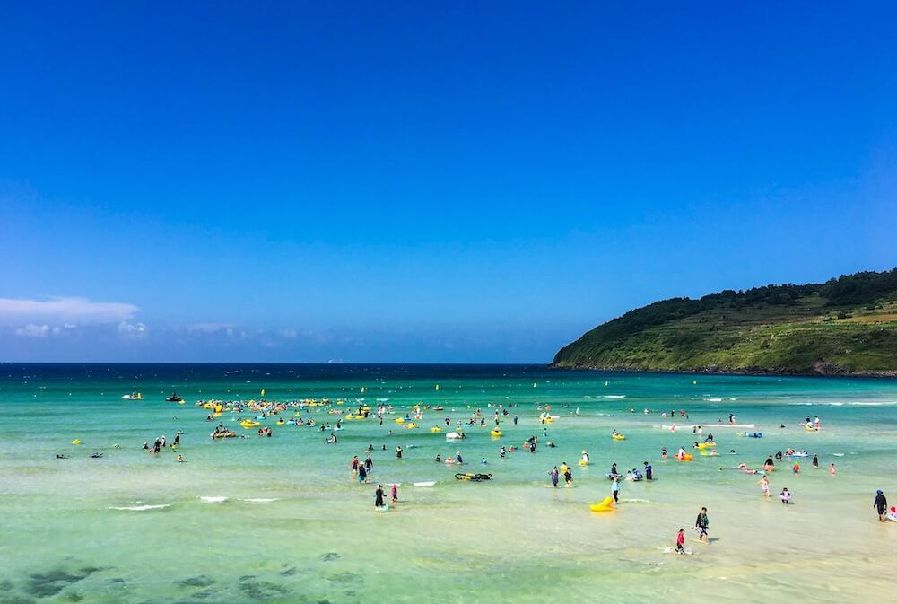
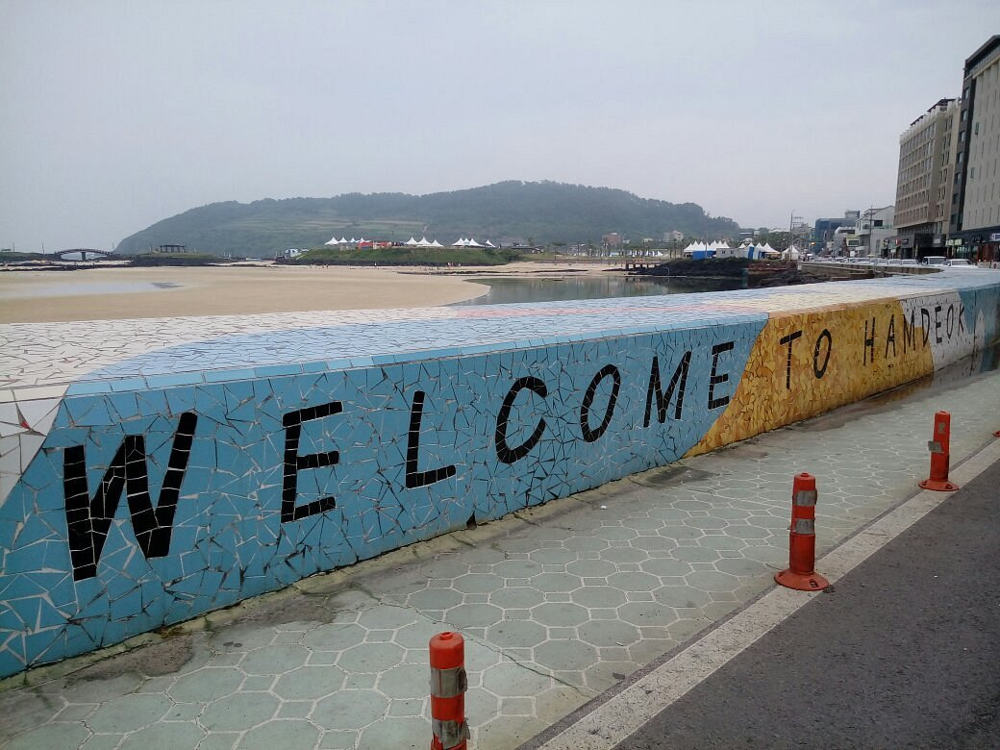
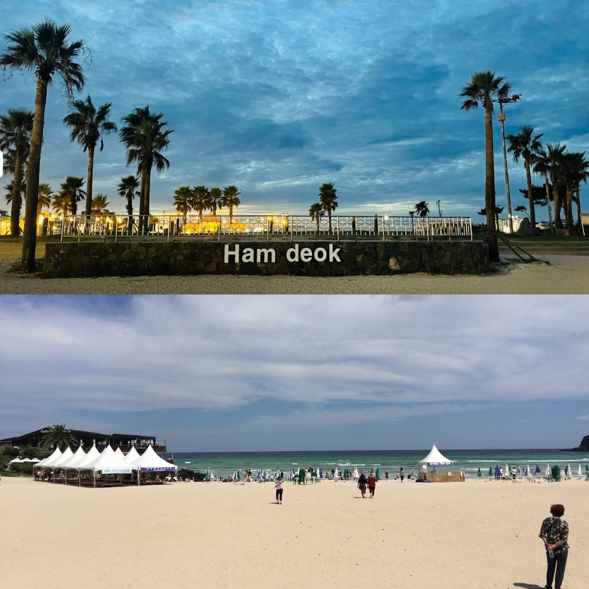
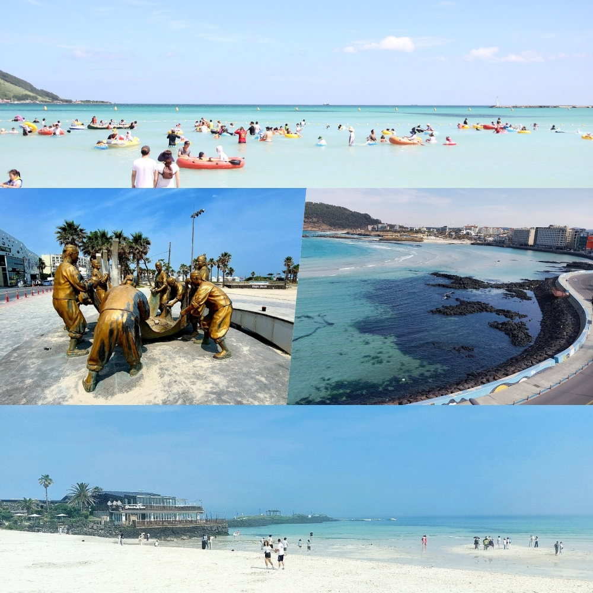
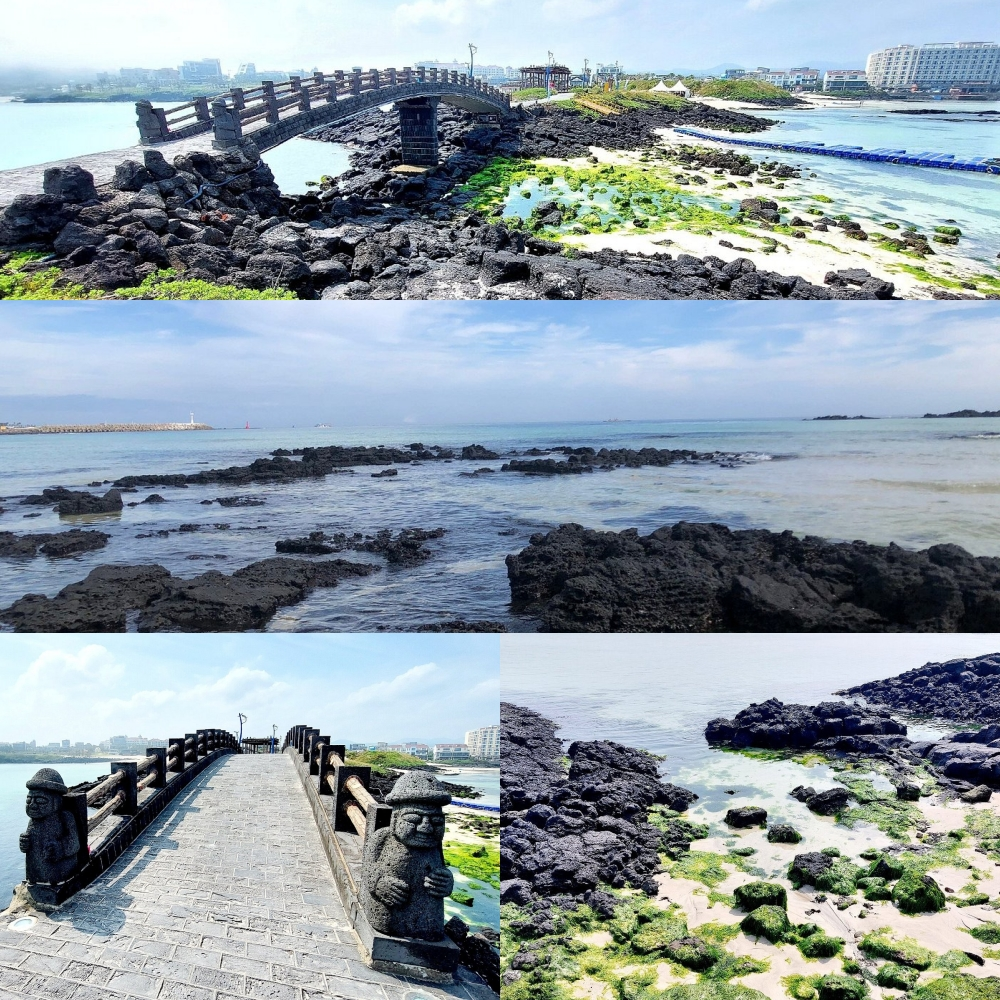
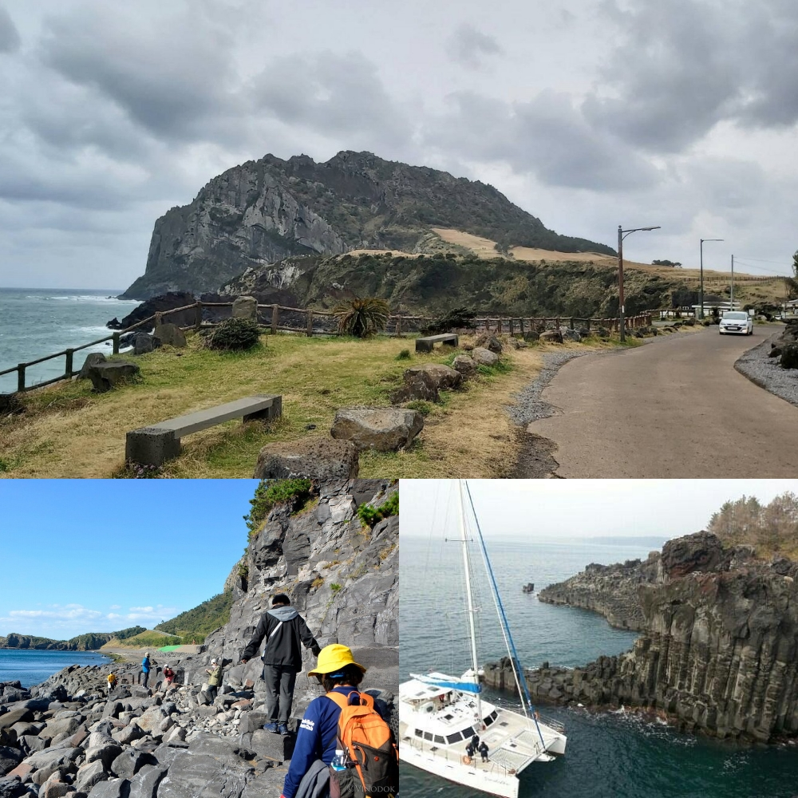

หาดฮัมด็อก หรือชื่อเต็มคือ หาดฮัมด็อก ซออูบง (Hamdeok Seoubong Beach 함덕 서우봉해변) เป็นหนึ่งใน 3 ชายหาดที่มีภูมิทัศน์ที่สวยที่สุดบน เกาะเชจู (Jeju Island) ประเทศเกาหลีใต้ ตั้งอยู่ห่างจาก ท่าอากาศยานนานาชาติเชจู (Jeju International Airport) ประมาณ 20 กิโลเมตร
ประกอบไปด้วย 3 ชายหาดที่รวมเข้าด้วยกัน ชายหาดที่ใหญ่ที่สุดจะมีความกว้างประมาณ 500 เมตร เป็นแหล่งพักผ่อนสุดชิลที่เผยให้เห็นถึงความงดงามของน้ำทะเลสีฟ้า และหาดทรายสีขาว มองออกไปเราก็จะเห็นทิวทัศน์ของ ยอดเขาซออูบง (Seoubong Peak) กรวยภูเขาไฟที่ดับมอด กลายเป็นเนินเขาสีเขียวที่บดบังคลื่นลม ทำให้บางบริเวณของหาดฮัมด็อกมีคลื่นลมที่ค่อนข้างสงบ เหมาะกับการไปเดินหาด เล่นน้ำชิลๆ
พื้นในบริเวณหาดฮัมด็อกเป็นศูนย์รวมของโรงแรม รีสอร์ท ร้านอาหาร และคาเฟ่ ทำให้ที่นี่เป็นแหล่งพักผ่อนชั้นยอดบนเกาะเชจู
ที่สำคัญยังเป็นสถานที่จัดงานอีเวนต์ คอนเสิร์ต รวมถึงยังมีกิจกรรมสนุกๆ ให้ทำมากมาย ไม่ว่าจะเป็นพายเรือคายัค หรือเล่นเซิร์ฟ
ที่จัดขึ้นในบริเวณท่าเรือ และด้วย Jangnim Harbor ตั้งอยู่ในพื้นที่เมืองปูซาน จึงยังมีสิ่งที่น่าสนใจอื่นๆ อีกมากมาย



ทางทิศตะวันออกของหาดฮัมด็อกจะมี Jeju Olle trail เส้นทางปีนเขาบนยอดเขาซออูบงที่ถ้ามองย้อนลงมา เราจะได้เห็นวิวของท้องทะเล ชายหาด และบ้านเมืองบนเกาะเชจูได้อย่างกว้างไกล ยิ่งวันไหนที่ฟ้าเปิดก็อาจเห็นได้ไกลจนถึง ภูเขาฮัลลาซาน (Hallasan) เลยทีเดียว


จาก Jeju International Airport ขึ้นรถเมล์สาย 38 หรือ 101 ไปลงที่ป้าย Hamdeok Beach
หากมาจากในตัวเมือง นั่งรถเมล์ 101 (Intercity) สาย : 310-1 , 340-1 , 201 ไปลงที่หาดได้เช่นกัน โดยใช้เวลาประมาณ 40 นาที
จาก Jeju International Airport เรียก Taxi ไปที่หาดได้เลย 😉